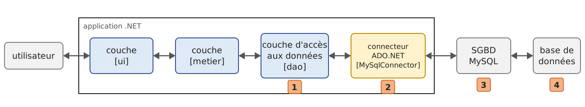
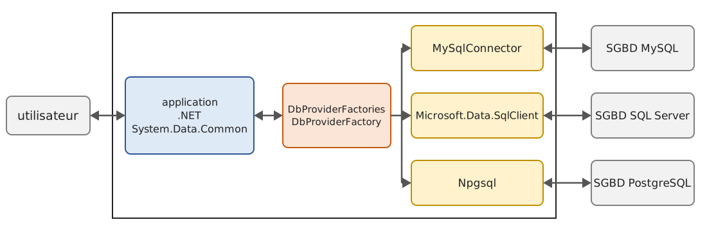
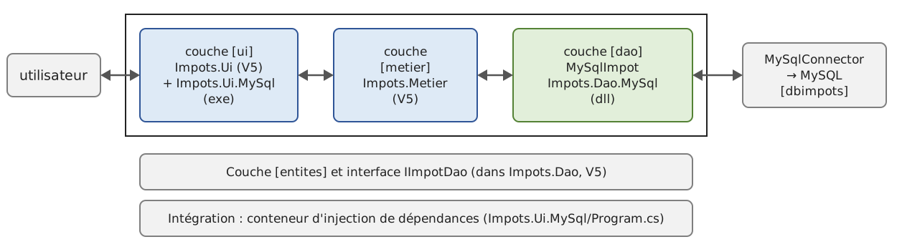

10. Accessing Databases with ADO.NET
10.1. The ADO.NET connector
Let’s revisit the layered architecture used repeatedly since Chapter 6. So far, the [dao] layer of the [Impots] application has utilized three types of data sources:
- data hard-coded into the code ([HardwiredImpot]);
- data from a text file ([FileImpot]);
- data from a JSON file ([JsonImpot]).
In this chapter, we examine the case where the data comes from a database. The architecture becomes as follows:

In the diagram above, the [dao] layer communicates with the [1] (Database Management System) [3], which manages the database [4], through a class library specific to the SGBD used by [2]. This library implements standard features grouped under the name ADO.NET (ADO for “ActiveX Data Objects,” the name of the data access technology that preceded it on Windows). It is referred to as a “data provider” or a “connector.” All common SGBDs have a ADO.NET connector.
The classes of a connector are named after the SGBD: [MySqlConnection] for MySQL, [SqlConnection] for SQL Server, [NpgsqlConnection] for PostgreSQL… If the [dao] layer uses these classes, its code contains the connector’s name, and switching to SGBD requires modifying it. This architecture is both efficient—because a connector written for a specific SGBD can make the best use of it—and rigid, because changing the SGBD requires changing the [dao] layer. This second point should be put into perspective: companies do not change their SGBD very often. Furthermore, we will see that, starting with NET 2.0, ADO.NET offers a “generic connector” that provides flexibility without sacrificing performance.
The 2008 course used, in succession, SGBD, SQL Server Compact (since discontinued by Microsoft), SQL Server 2005 Express, MySQL 5, and then the ODBC, OLE, and DB drivers, with databases created using the Visual Studio wizards. Here we are using a single SGBD, MySQL 8, which the appendix installs with Laragon, and one of its most widely used connectors today, ADO.NET, MySqlConnector. The databases are created by SQL scripts run with the [mysql] command-line client; the appendix also shows how to create them using the HeidiSQL graphical client included with Laragon.
10.2. The Two Ways to Use a Data Source
ADO.NET allows you to use a data source in two different ways:
- connected mode;
- offline mode.
In connected mode, the application:
- opens a connection to the data source;
- works with the data source in read/write mode;
- closes the connection.
In offline mode, the application:
- opens a connection to the data source;
- retrieves a copy of all or part of the data from the source into memory;
- closes the connection;
- works with the in-memory copy of the data, reading from and writing to it;
- when the work is finished, opens a connection, sends the modified data to the data source so it can be updated, and closes the connection.
The offline mode relied on the classes [DataSet] (a small in-memory database, with its tables [DataTable], its rows [DataRow], and its relationships) and [DataAdapter] (the bridge between a [DataSet] and the database). These classes still exist in .NET 10, but they are rarely used in new applications: working with an in-memory copy of the data, followed by saving the changes, is now handled by a ORM (“Object-Relational Mapper”), which manipulates ordinary C# objects rather than table rows. The ORM of .NET, Entity Framework Core, is the subject of Chapter 11. As in the 2008 course, we will focus here only on the connected mode, on which Entity Framework Core is based.
10.3. Basic Concepts of Database Operations
10.3.1. The sample database
We will explain the main concepts of using a database with a database named MySQL. It contains a single table, [articles], where each row describes an item in a store:
- [ID]: a unique identifier for the item, which is the table’s primary key;
- [NOM]: the item’s name, which is also unique;
- [PRIX]: its price;
- [STOCKACTUEL]: its current inventory;
- [STOCKMINIMUM]: the minimum stock level below which the item must be restocked.
The database is created by the following script: SQL [sql/dbarticles.sql]:
- Line 5: The script is a text file encoded in UTF-8. [SET NAMES utf8mb4] indicates this to the server; otherwise, the accented characters in lines 31–36 could be misinterpreted by the client [mysql];
- Lines 8–9: The database is deleted if it exists, then recreated. The script can thus be run multiple times to restore the database to its initial state. [utf8mb4] is the full Unicode encoding of MySQL (the historical encoding [utf8] of MySQL encodes only characters using up to three bytes);
- line 12: [dbarticles] becomes the current base: the subsequent SQL commands will be executed on it;
- lines 15–26: the definition of the table [articles]:
- line 16: the column [ID] is the table’s primary key ([PRIMARY KEY]). The [AUTO_INCREMENT] attribute, specific to MySQL, indicates that its value is generated by SGBD itself when a row is inserted: 1, 2, 3… The other SGBD entries have equivalent concepts, but with different syntax ([IDENTITY] for SQL Server, [GENERATED … AS IDENTITY] for PostgreSQL);
- Line 18: The price is an exact 10-digit decimal number with 2 digits after the decimal point. The 2008 script used the type [DOUBLE PRECISION], a floating-point number, which is not suitable for amounts (see the difference between [double] and [decimal] in Chapter 3). The type SQL [DECIMAL] corresponds to the C# type [decimal];
- Lines 22–26: integrity constraints. [UNQ_NOM] prevents two items from having the same name; the [CHECK] constraints prevent an empty name, a negative or zero price, or a negative stock. The 2008 script already added these constraints, but MySQL silently ignored them; MySQL has enforced them since version 8.0.16;
- Lines 30–36: insertion of six lines. The [ID] column is not initialized: SGBD assigns a value to it.
The script is run using the command-line client [mysql], in the [sql] folder (the user [root] of MySQL does not have a password in the annex installation; otherwise, add the [-p] option, and the client will prompt for it):
The command displays nothing if everything goes well. You can check the structure and contents of the table using the same client:
- Line 1: The option [-t] requests a table display; the option [-e] specifies the SQL commands to be executed, and the option [--default-character-set=utf8mb4] ensures that accented characters are displayed correctly in a UTF-8 terminal;
- lines 3–9: the table structure, obtained using the commands MySQL and [describe];
- lines 12–19: the table’s contents. The values in the [ID] column were generated by SGBD.
A note on case sensitivity: column names are always case-insensitive ([nom] and [NOM] refer to the same column), but table names are server filenames. They are case-insensitive on Windows but case-sensitive on Linux. To ensure the examples work everywhere, the table is named [articles], in lowercase, and the queries refer to it that way.
Now that we have a database, we’ll be able to use it. Before we do that, let’s review a few concepts from SQL.
10.3.2. The four basic commands of the SQL language
SQL (“Structured Query Language”) is a partially standardized language for querying and updating databases. All SGBD dialects comply with the standardized part of SQL but add proprietary extensions to the language that take advantage of their specific features. We have already encountered two examples of this: the automatic generation of primary keys and the allowed data types for table columns often depend on the SGBD.
The four basic commands of the SQL language that we present here are standardized and supported by all SGBD variants:
Command | Role |
[select col1, col2, … from table1, table2, … where condition order by expression] | The query used to retrieve data from a database. Only the keywords [select] and [from] are required. A join is performed with all tables following the keyword [from]; only the columns following the keyword [select] are retained; only the rows that satisfy the condition of the keyword [where] are retained; the resulting rows, sorted according to the expression in the keyword [order by], form the result of the query. This result is a table. |
[insert into table(col1, col2, …) values (val1, val2, …)] | Inserts a row into [table]. [(col1, col2, …)] specifies the columns in the row to be populated with the values from [(val1, val2, …)]. |
[update table set col1=val1, col2=val2, … where condition] | Updates the rows in [table] based on [condition] (all rows if there is no [where]). For these rows, the [coli] column is set to [vali]. |
[delete from table where condition] | Deletes all rows from [table] that match [condition] (all rows if there is no [where]). |
We will write a console application that issues SQL commands based on [dbarticles]. Here is an example of the output. The reader is encouraged to understand the SQL commands issued and their results:
- line 2: the connection string: it contains all the parameters needed to connect to the database;
- line 4: the contents of table [articles] are retrieved. Prices are displayed with a decimal comma: the program is configured for French regional settings;
- line 17: a new row is inserted. Note that the [id] column is not initialized in this operation because SGBD will generate its value;
- Line 20: verification. Line 32: the row has indeed been added, with [id] 7. With [select *], the column names are those of the table, in uppercase;
- Line 34: We increase the price of the item that was just added by 10%;
- Line 43: The price increase has taken effect;
- line 45: the previously added item is deleted;
- line 48: we verify that only six items remain;
- line 56: the program accepts only the four commands [select], [insert], [update], and [delete];
- line 60: an error reported by SGBD: the table [article] does not exist;
- line 63: the uniqueness constraint [UNQ_NOM] prevents the addition of a second item [vélo]. The error messages for MySQL, like those for .NET, are in English.
10.3.3. Base classes of ADO.NET for connected mode
Let’s return to the diagram of an application that accesses a database through a ADO.NET connector:
In connected mode, the application:
- opens a connection to the data source;
- works with the data source in read/write mode;
- closes the connection.
Three types of objects are primarily involved in these operations:
- the connection, which encapsulates the properties and methods of the database connection;
- the command, which encapsulates the properties and methods of the executed SQL command;
- the data reader, which encapsulates the properties and methods of the result of a SQL or [select] command.
Each connector defines its own classes ([MySqlConnection], [MySqlCommand], [MySqlDataReader] for MySqlConnector), which are derived from abstract classes common to all connectors, defined in the [System.Data.Common] namespace: [DbConnection], [DbCommand], [DbDataReader]. The 2008 course presented the interfaces [IDbConnection], [IDbCommand], and [IDataReader] from the namespace [System.Data], which these classes implement. Today, abstract classes are preferred: they offer more functionality than interfaces, to which it was no longer possible to add methods without breaking existing connectors (default interface methods did not yet exist). The asynchronous versions of the methods ([OpenAsync], [ExecuteReaderAsync], [ReadAsync]…), for example, exist only in the abstract classes.
10.3.3.1. The DbConnection class
It is used to manage the connection to the database. The methods M and properties P of this class that we will use are as follows:
Name | Type | Role |
[ConnectionString] | P | Database connection string. It specifies all the parameters needed to establish a connection to a specific database. |
[Open] | M | Opens the connection to the database defined by [ConnectionString]. |
[Close] | M | closes the connection. [Dispose] closes it as well. |
[BeginTransaction] | M | starts a transaction. |
[CreateCommand] | M | creates an order associated with this connection. |
[State] | P | Connection status: [ConnectionState.Closed], [ConnectionState.Open], [ConnectionState.Connecting], [ConnectionState.Executing], [ConnectionState.Fetching], [ConnectionState.Broken]. |
With MySqlConnector, a connection can be established as follows:
or, more simply, by passing the connection string to the constructor:
10.3.3.2. The DbCommand class
It is used to execute a SQL command or a stored procedure. The M methods and P properties of this class that we will use are as follows:
Name | Type | Role |
[CommandType] | P | specifies what is to be executed. Its values are taken from the enumeration [CommandType]: [CommandType.Text] executes the command SQL defined in the property [CommandText] (this is the default value); [CommandType.StoredProcedure] executes a stored procedure in the database. |
[CommandText] | P | the text of the SQL command to be executed if [CommandType] is equal to [CommandType.Text], the name of the stored procedure to be executed if [CommandType] equals [CommandType.StoredProcedure]. |
[Connection] | P | the connection [DbConnection] to be used to execute the command SQL. |
[Transaction] | P | the transaction [DbTransaction] in which to execute the order SQL. |
[Parameters] | P | the list of parameters for a configured SQL order. The [update articles set prix=prix*1.1 where id=@id] order has the [@id] parameter. |
[ExecuteReader] | M | Executes an order SQL [select]. This returns an object [DbDataReader] representing the result of [select]. |
[ExecuteNonQuery] | M | executes a command SQL [update], [insert], [delete]. This returns the number of rows affected by the operation (updates, inserts, deletes). |
[ExecuteScalar] | M | executes a command SQL [select] that returns only a single result, such as [select count(*) from articles]. |
[CreateParameter] | M | creates a parameter [DbParameter] from a parameterized order SQL. |
[Prepare] | M | allows you to optimize the execution of a parameterized query when it is executed multiple times with different parameters. |
The execution of a SQL command without a transaction takes the following form:
10.3.3.3. The class DbDataReader
It encapsulates the results of a SQL or [select] command. A [DbDataReader] object represents a table with rows and columns, which are processed sequentially: first the first row, then the second, and so on, with no possibility of going back. Not all rows are loaded into memory: the reader receives them from the server as they are read. The methods M and properties P of this class that we will use are as follows:
Name | Type | Role |
[FieldCount] | P | The number of columns in the result table. |
[GetName] | M | [GetName(i)] returns the name of column number i in the result table (columns are numbered starting from 0). |
[GetOrdinal] | M | [GetOrdinal(nom)] returns the column number of the column named [nom]. |
[Item] | P | The indexer [reader[i]] represents column number i of the current row, while [reader["nom"]] represents the column with name [nom], in the form of a [object]. |
[Read] | M | moves to the next row of the result table. Returns [true] if the row was successfully read, and [false] if there are no more rows. |
[Close] | M | closes the reader. [Dispose] also closes it. |
[GetInt32] | M | [GetInt32(i)] returns the integer value of column i in the current row. Other similar methods are [GetBoolean], [GetDateTime], [GetDecimal], [GetDouble], [GetFloat], [GetInt16], [GetInt64], [GetString]… |
[GetValue] | M | [GetValue(i)] returns the value of column i in the current row as type [object]. |
[IsDBNull] | M | [IsDBNull(i)] returns [true] if column i of the current row has no value, which is represented by the value SQL [NULL]. The corresponding value in C# is [DBNull.Value]. |
The processing of a [DbDataReader] object often looks like the following:
10.3.4. Error Handling
The [dao] layer may encounter numerous errors while operating the database: server down, database does not exist, incorrect password, SQL syntax error, integrity constraint violation, etc. These errors are reported as exceptions thrown by the ADO.NET connector. The code in the [dao] layer must handle them and, regardless of the outcome, release the resources it has acquired: the connection and the reader must be closed. The code shown above for processing the result of a [select] command becomes the following:
Closing the connection and the reader can be automated using the [using] statement: the connection, the command, and the reader implement the [IDisposable] interface, and their [Dispose] method closes them. Starting with C# 8, the declaration [using] (without a block) releases the resource at the end of the block containing the declaration:
- Line 4: The declaration
*[using]ensures that the connection will be closed upon exiting the*[try]block, whether it is exited normally or via an exception. This saves a [finally] clause, but the benefit lies not in this minor saving: the [using] declaration prevents the developer from having to close the connection manually. However, forgetting to close a connection can go unnoticed and cause the application to “crash” in a seemingly random manner whenever the SGBD reaches the maximum number of open connections it can support; - Line 7: The same procedure applies to the reader. Resources are released in the reverse order of their declaration: the reader, then the command, then the connection.
The exceptions thrown by the connectors all extend from the abstract class [DbException] (namespace [System.Data.Common]). Each connector has its own derived class, [MySqlException] for MySqlConnector, which provides additional information about the error: its number MySQL ([Number]), the same number in enumeration form ([ErrorCode], of type [MySqlErrorCode]), and the standardized error code SQL ([SqlState]). The program [adonet-02.cs] generates various errors and displays them:
Results:
- Line 1: The [#:package] directive in a single-file application (Chapter 2) adds the NuGet and [MySqlConnector] packages, version 2.4.0, to the program. We’ll return to this in the next paragraph;
- line 8: the database connection string, written at the beginning of the program;
- lines 11–20: six operations that fail: database does not exist; server unreachable (no MySQL server is listening on port 3399, which produces the same error as a stopped server); syntax error; table does not exist; duplicate item name; negative price;
- line 23: the method [Executer] is a local function (C# 7) of the main program. The keyword [static] (C# 8) prevents it from using the main program’s local variables: it works only with its parameters (and constants);
- line 34: an exception handler (C# 6) allows a specific error to be handled separately—in this case, a violation of a uniqueness constraint (error MySQL No. 1062). In this case, an application would display a message that the user can understand;
- Line 39: Other errors: MySQL. The results show their numbers and codes: [UnknownDatabase] (1049), [UnableToConnectToHost] (1042), [ParseError] (1064), [NoSuchTable] (1146). The violation of a constraint [CHECK] (error 3819, line 17) has no name in the enumeration [MySqlErrorCode] of MySqlConnector 2.4.0: the number is displayed instead;
- line 45: the clause that would catch the exception from any connector. It serves no purpose here, but it is the one that a [dao] layer written independently of the connector would use. Note the order of the [catch] clauses: from the most specific ([MySqlException]) to the most general ([DbException]).
10.3.5. Example Project Configuration
The MySqlConnector connector is a NuGet package. In a single-file application, it is added using the following directive:
In a project, it is added using the command [dotnet add package], entered in the project folder:
which writes the reference to the package in the file [.csproj]:
There are two ADO.NET connectors for MySQL:
- [MySql.Data] (“Connector/NET”), published by Oracle, the owner of MySQL. This is the connector used in the 2008 course, in version 5.2;
- [MySqlConnector], an open-source connector (licensed under MIT) developed independently of Oracle. It is fully asynchronous (its [XxxAsync] methods are truly asynchronous, whereas those of [MySql.Data] have long been disguised synchronous methods), faster, and it works with MySQL and MariaDB. This is the one used by [Pomelo.EntityFrameworkCore.MySql], the Entity Framework Core provider MySQL that we’ll use in Chapter 11.
The classes for both connectors have the same names ([MySqlConnection], [MySqlCommand]…), but in different namespaces: [MySqlConnector] for the first, [MySql.Data.MySqlClient] for the second.
The connection string should not be hard-coded in an actual application: it depends on the machine on which the application is installed. The 2008 course placed it in the [connectionStrings] section of the XML [App.config] file, read using the [ConfigurationManager] class. The current configuration file for .NET is the file JSON [appsettings.json], already used in Chapter 6, which also has a section dedicated to connection strings, [ConnectionStrings]. The first program in this chapter uses the following [appsettings.json] file, located in the [10-adonet] folder:
- Line 2: the connection strings section. It can contain multiple strings, each identified by a name;
- line 3: the connection string named [dbarticles]. A connection string has the form “parameter1=value1;parameter2=value2;…”. Its parameters depend on the connector; those for MySqlConnector are as follows:
- [Server]: the name of the machine on which SGBD and MySQL are located—in this case, [localhost]—that is, the machine on which the program is running;
- [Port]: the port on which the MySQL server listens for connections; the default is 3306;
- [Database]: the database name, here [dbarticles];
- [User] (or [Uid]): the user MySQL, here [root], the administrator of SGBD;
- [Password] (or [Pwd]): their password, left blank here.
The connectionstrings.com site provides the format for the connection strings of the main SGBD instances, and the MySqlConnector documentation provides the complete list of its settings: MySqlConnector Connection Options.
The other programs in this chapter, which are shorter, store their connection string in a constant at the beginning of the program, such as [adonet-02.cs]: this is simpler for examples, but should not be done in a real application.
10.3.6. The Example Program
The program [adonet-01.cs], which we saw an example of running, is as follows (main program):
- lines 1–2: the two packages used: the MySQL connector and the JSON configuration file;
- line 10: the connector’s class namespace. This represents a dependency on a connector-specific namespace: the program will need to be modified if the SGBD connector is changed;
- Lines 16–19: reading the [appsettings.json] file, as described in Chapter 6. The file is searched for in the current directory ([Directory.GetCurrentDirectory]), the one from which [dotnet run adonet-01.cs] is launched. A single-file application is in fact compiled in a temporary folder, separate from the source file: [AppContext.BaseDirectory] would not refer to the folder [10-adonet];
- line 20: [GetConnectionString(nom)] is a shortcut for [config["ConnectionStrings:nom"]]. It returns [null] if the string does not exist, a case handled on lines 27–29;
- line 37: the four accepted SQL commands, in a set [HashSet] (Chapter 5), initialized by a collection expression (C# 12). The 2008 course used a dictionary whose values served no purpose;
- line 40: the loop for entering SQL commands typed on the keyboard and executing them on the database;
- line 51: the first word of the query, obtained using a regular expression (Chapter 5): [\S+] refers to a sequence of characters that are not spaces. It is converted to lowercase for comparison, but the query itself is not modified: the 2008 program converted the entire query to lowercase, which prevented the insertion of an article titled “Bike”;
- lines 52–55: if the query is invalid, an error message is displayed and the program moves on to the next query;
- lines 58–64: the entered command SQL is executed. The execution takes a different form depending on whether it is a [select] command or a [insert], [update], or [delete] command: in the first case, the command retrieves data from the database without modifying it; in the second, it updates the database without retrieving any data. In both cases, execution is delegated to a method that receives the connection string and the SQL command to be executed.
10.3.7. Executing a SELECT query
Executing SQL commands involves the following steps:
- connecting to the database;
- sending the SQL commands to the database;
- processing the results of the SQL commands;
- closing the connection.
Steps 2 and 3 can be repeated; the connection is closed only at the end of database processing. Open connections are limited resources in a SGBD: they must be conserved, and we always strive to limit the lifetime of an open connection. In our program, the connection is closed after each SQL command, and a new connection is opened for the next command.
However, opening a connection is costly: it requires establishing a network connection with the server, potentially negotiating encryption, and authenticating. To reduce this cost, the connectors manage a connection pool: when the application closes a connection, the connector does not actually close it but returns it to a pool; when the application opens a new connection with the same connection string, it receives one of the connections from the pool that has already been established. The advantage of this system is that it is transparent to the developer: the program does not need to be modified to use it. The pool is enabled by default in MySqlConnector (as in other current connectors) and is configured via connection string parameters ([Pooling], [MaximumPoolSize], [MinimumPoolSize]…). It is therefore best practice to open a connection at the start of each operation and close it at the end using a [using].
First, we will focus on the execution of the commands SQL and [select]. The [ExecuteSelect] method in our sample program and the [AfficherReader] method it uses are as follows:
- Line 89: The method receives two parameters:
- the connection string [connectionString], which allows it to connect to the database;
- the command SQL [select] [requete] to be executed on this connection;
- Line 91: Any database operation can throw an exception. This is all the more likely here because the SQL commands provided by the user may contain syntax errors. We need to be able to tell the user this: therefore, all the code must be contained within a [try] / [catch];
- line 93: several issues here:
- The connection to the database is initialized with the connection string [connectionString]. It is not yet open; it will be opened on line 95;
- The declaration [using] ensures that the connection is closed (returned to the pool) upon exiting the block [try];
- The connection is of a type specific to the connector: [MySqlConnection];
- line 95: the connection is opened. This is when the connection string parameters are used, and connection errors occur;
- line 97: the command SQL is assigned to an object [MySqlCommand], initialized with two pieces of information: the command SQL to be issued and the connection to be used. The same type of object is used to execute a [select] command and [update], [insert], and [delete] commands;
- line 98: The [select] command is executed by the command’s [ExecuteReader] method, which returns a [MySqlDataReader] object, derived from [DbDataReader];
- line 100: the display of results is handled by the [AfficherReader] method;
- line 102: any exception is caught under its base type, [DbException];
- line 109: the method receives a [DbDataReader] object. Note that it uses the abstract class rather than the connector’s [MySqlDataReader] class: it would be suitable for any connector;
- Lines 112–119: The column names from the result table of [select] are displayed. These are the [coli] columns from the [select col1, col2, … from table …] query. [string.Join] concatenates them, separating them with commas, and the [new string('-', n)] constructor produces a string of dashes;
- lines 121–128: the result table is iterated over, and the values of each row are displayed;
- line 126: The type of column i in the result is unknown because the query entered by the user is unknown. Therefore, the syntax [reader.GetXxx(i)]—where [Xxx] is the column type—cannot be used. We then use the indexer [reader[i]], which returns the value in the form of a [object]; [StringBuilder.Append(object)] adds it using its method [ToString]. For the column [prix], of type SQL [DECIMAL], the object is a [decimal], displayed with two decimal places and a comma.
10.3.8. Executing an update command: INSERT, UPDATE, DELETE
The code for method [ExecuteUpdate] is as follows:
Executing an update order differs from executing a [select] order only in the command method used: [ExecuteReader] for [select], [ExecuteNonQuery] for [update], [insert], [delete]:
- Line 78: The order [update], [insert], or [delete] is executed by the command’s method [ExecuteNonQuery]. If successful, this method returns the number of rows updated ([update]), inserted ([insert]), or deleted ([delete]);
- Line 80: This number of rows is displayed.
The reader is encouraged to review the example of execution provided in the section “The Four Basic Commands of the SQL Language.”
10.4. Other ADO.NET Connectors
10.4.1. Current connectors
The code we examined is specific to a connector: it uses classes from the [MySqlConnector] namespace. The 2008 course then built the same program using the SQL Server Compact connectors, the SQL Server 2005 connectors, the MySQL 5 connectors, and then with the ODBC, OLE, and DB drivers, to demonstrate that only the class names changed. This observation remains true, and we will not repeat the exercise, which would require installing additional SGBD. Here are today’s main ADO.NET connectors, all distributed as NuGet packages:
SGBD | NuGet package | Connection | Notes |
MySQL, MariaDB | [MySqlConnector] | [MySqlConnection] | Unused connector, used in this course |
MySQL | [MySql.Data] | [MySqlConnection] | the Oracle connector; namespace [MySql.Data.MySqlClient] |
SQL Server, Azure SQL | [Microsoft.Data.SqlClient] | [SqlConnection] | Replaces the old [System.Data.SqlClient] from the .NET Framework, used in 2008 |
PostgreSQL | [Npgsql] | [NpgsqlConnection] | |
SQLite | [Microsoft.Data.Sqlite] | [SqliteConnection] | A database in a file, without a server: the successor to SQL Server Compact for small applications |
Oracle | [Oracle.ManagedDataAccess.Core] | [OracleConnection] | [Oracle.ManagedDataAccess.Client] namespace |
Unless otherwise specified, the class namespace is named after the package.
To switch from one SGBD to another, you change the package, the namespace ([using]), and the class prefix ([MySqlCommand] becomes [SqlCommand], [NpgsqlCommand]…), and the connection string; the rest of the code remains the same.
The drivers ODBC (“Open DataBase Connectivity”) and OLE DB (“Object Linking and Embedding DataBase”) were, in 2008, a way to access any SGBD device equipped with such a driver using a single code, albeit at the cost of reduced performance. These are technologies predating .NET, specific to Windows for OLE and DB. They remain available ([System.Data.Odbc] and [System.Data.OleDb] packages) for accessing data sources that do not have a ADO.NET connector, but they are no longer selected for new applications: All common SGBD packages have their own ADO.NET connector, and it is the generic connector described below that provides independence from SGBD.
10.4.2. The Generic Connector
The architecture used is as follows:

The “generic connector” provides a standard interface to the applications that use it without sacrificing performance, because it relies on the connectors specific to SGBD. The application uses only the abstract classes of [System.Data.Common] ([DbConnection], [DbCommand], [DbDataReader], [DbParameter]…). Concrete objects are created by a factory provided by the connector: a class derived from [DbProviderFactory], whose methods [CreateConnection], [CreateCommand], [CreateParameter]… return connector objects in the form of abstract classes. Each connector has its own factory, accessible via its static property [Instance]: [MySqlConnectorFactory.Instance] for MySqlConnector, [SqlClientFactory.Instance] for SQL Server, and [NpgsqlFactory.Instance] for PostgreSQL.
The static class [DbProviderFactories] maintains a registry of factories, each identified by a so-called invariant name. With the .NET Framework, this registry was populated by the connector installations in the machine’s configuration file, and the 2008 course displayed the six connectors installed on the author’s machine. With .NET, the registry is empty at startup: the application itself adds the connectors it supports using the [DbProviderFactories.RegisterFactory] method. The connector can then be selected via configuration using its invariant name. This is what the program [adonet-03.cs] does; it takes the invariant name of the connector to be used as an argument:
Results with the [MySqlConnector] connector (default value):
Results with an unregistered connector:
- Line 10: the invariant name of the connector, passed as an argument; the default is [MySqlConnector];
- line 14: the registration of the MySqlConnector factory in the registry, under the invariant name [MySqlConnector]. This is the only line in the program that names a connector class. An application that also supports SQL Server would add the line [DbProviderFactories.RegisterFactory("Microsoft.Data.SqlClient", SqlClientFactory.Instance)] (and the reference to the package [Microsoft.Data.SqlClient]);
- lines 18–21: [GetFactoryClasses] returns the list of registered connectors as an in-memory table, a [DataTable] object in offline mode: its [DataRow] rows are indexed by column name. The column [AssemblyQualifiedName] contains the full name of the factory class; note that the version of the assembly MySqlConnector is 2.0.0.0: only the package version (2.4.0) changes from one minor update to the next;
- line 28: the connector factory is retrieved by its invariant name. If the name has not been registered, [GetFactory] launches a [ArgumentException] (line 4 of the second set of results);
- Lines 40–42: The connection is created by the factory, configured with the connection string, and then opened. The [CreateXxx] methods return a nullable type ([DbConnection?]): a factory may not know how to create certain objects. The [!] operator tells the compiler that we know the result is not [null];
- lines 43–45: The command is created in the same way, then receives its connection and text. We could also have written [connexion.CreateCommand()];
- lines 47–50: The query contains a parameter, [@prix]. Parameterized queries are discussed in the following section; for now, note that the parameter is also created by the factory;
- line 52: The results show that the objects manipulated through the abstract classes are objects of the MySqlConnector connector ([MySqlConnection], [MySqlCommand], [MySqlDataReader]);
- Line 55: Since the column types are known, the methods [GetInt32], [GetString], and [GetDecimal] are used, which directly return a value of the expected type.
Starting with .NET 7, ADO.NET also provides the abstract class [DbDataSource], which combines a factory and a connection chain: [fabrique.CreateDataSource(connectionString)] returns a data source whose method [OpenConnection] returns an open connection. We will use this with asynchronous methods.
10.4.3. Which connector should you choose?
We’ve seen two ways to use a ADO.NET connector:
- use the connector’s classes directly: the [dao] layer depends on the connector. Changing SGBD requires modifying the [dao] layer;
- using the generic connector: the [dao] layer only recognizes the abstract classes and the connector’s invariant name, which can be read from a configuration file.
It therefore seems that the generic connector is the ideal solution. In practice, however, it cannot hide all the specific details of a SGBD:
- the SQL itself differs from one SGBD to another as soon as you move beyond basic commands: primary key generation, limiting the number of rendered rows ([limit 10] for MySQL, [top 10], or [offset … fetch] for SQL Server), column types, date functions, etc.;
- The syntax of the parameters for parameterized queries varies: [@nom] for SQL Server, MySQL, and SQLite, but [?] (positional parameters, without names) for the drivers ODBC and OLE, DB, and the 2008 connector MySQL, and [$1], [$2]… in the native SQL of PostgreSQL (Npgsql also accepts [@nom]). With positional parameters, the order in which the parameters are added to the [Parameters] collection matters; with named parameters, the order does not matter;
- Finally, exceptions are [DbException], whose error codes depend on the SGBD.
The 2008 course cited frameworks that overcome these limitations: Spring.NET, iBatis.NET, NHibernate, and LINQ through SQL. Spring.NET and iBatis.NET are no longer maintained; LINQ through SQL are no longer being developed and do not exist in thecurrent NET; NHibernate still exists. Today, the following are primarily used:
- Entity Framework Core, Microsoft’s ORM, introduced in Chapter 11: the [dao] layer handles C# objects and writes its queries in LINQ; it is EF Core that generates the SQL specific to each SGBD;
- Dapper, a “micro-ORM,” adds extension methods to ADO.NET connections that directly transform rows from a [select] into C# objects. We continue to write the SQL, but we no longer write the loops in the reader.
These tools all rely on ADO.NET connectors: understanding ADO.NET remains useful for understanding what they do and troubleshooting issues with them.
10.5. Parameterized Queries
10.5.1. The Concept
A parameterized query is a SQL command in which certain values are replaced by parameters, whose values are provided separately from the query text. The [adonet-04.cs] program implements this: it empties the [articles] table, inserts five records using a parameterized query, and then re-reads them using another parameterized query:
Results:
- Line 99: A [Article] object represents a row in the [articles] table. It is a [record] (C# 9, Chapter 4): a class whose main constructor defines the properties, with a method [ToString] that displays these properties (lines 5–9); the 2008 course covered a 25-line class. In a single-file application, types are declared after the high-level statements;
- lines 10–13: an array of five items;
- line 19: all items are deleted from the table. This time, the method [ExecuteUpdate] returns the number of rows deleted;
- line 34: the method for inserting an array of items:
- line 39: the query to insert an item. It has four parameters: [@nom], [@prix], [@sa] (current stock), and [@sm] (minimum stock). With MySqlConnector, a parameter is a name preceded by the character [@]; the name can be anything;
- Lines 42–45: Each of the four parameters is declared and added to the command’s parameter list. The [Parameters.Add(string nom, MySqlDbType type)] method specifies the parameter name—which must be one of those in the query—and the SQL type of the relevant column; a third form, [Add(nom, type, taille)], further specifies the column width, which is useful for character strings ([VarChar]);
- Line 47: The parameterized query is “prepared,” meaning it is compiled by the SGBD procedure. This operation is not required; it improves performance. When a SGBD executes a SQL command, it performs analysis and optimization before executing it (it creates an “execution plan”). A parameterized query is intended to be executed multiple times with different parameters, but its text remains unchanged: this preparation work need only be done once. Once prepared, the query is executed repeatedly with new parameter values but the same execution plan;
- lines 49–55: the items are inserted one by one. Each of the four parameters is assigned a value via its property [Value], and then the query, now complete, is executed in the usual manner;
- line 61: the method that returns the items whose names match a pattern [like] of SQL (the character [%] denotes any sequence of characters: [%3] denotes names ending in 3):
- line 68: [AddWithValue(nom, valeur)] declares the parameter and assigns a value to it in a single statement. The parameter’s type, SQL, is inferred from the C# type of the value, in this case [string]. This is the most common form when the query is executed only once;
- Lines 72–75: Each line of the result becomes a [Article] object. The column types are known: the [GetXxx] methods are used. These methods accept either the column number or, with MySqlConnector, the column name. With the abstract class [DbDataReader], the name is accepted by extension methods of the same name (class [DataReaderExtensions], namespace [System.Data]), which are equivalent to [reader.GetInt32(reader.GetOrdinal("stockactuel"))].
The types SQL through MySqlConnector are the values of the enumeration [MySqlDbType]. Here are the most common ones and their corresponding C# types:
Type MySqlDbType | C# Type | Column type MySQL |
[Int32] | [int] | [INT] |
[Int64] | [long] | [BIGINT] |
[Decimal] | [decimal] | [DECIMAL(p,d)] |
[Double] | [double] | [DOUBLE] |
[VarChar] | [string] | [VARCHAR(n)], variable-length string |
[DateTime] | [DateTime] | [DATETIME] |
[Date] | [DateOnly] or [DateTime] | [DATE] |
[Bool] | [bool] | [BOOL] (synonym for [TINYINT(1)]) |
Abstract classes, on the other hand, use the enumeration [DbType] ([DbType.Int32], [DbType.String], [DbType.Decimal]…), which is common to all connectors, via the [DbParameter.DbType] property.
10.5.2. The SQL injection
Preparation is not the only advantage of parameterized queries, nor is it the most important one. Let’s revisit the insert query. You might want to construct its text programmatically by inserting the values:
If (name, price, sa, sm) equals ("article1", 100, 10, 1), the query becomes:
But if the name is “article1,” it becomes:
and it is syntactically incorrect because of the apostrophe in the name. It gets worse: if the name comes from user input, the user can type text that changes the meaning of the query. This is known as a SQL injection, one of the most widespread and serious security vulnerabilities in database-driven applications. The program [adonet-05.cs] demonstrates this when searching for an article by name:
Results:
- Line 9: three names that a user might type: a common name, a name containing an apostrophe, and malicious text;
- line 25: the first search method inserts the name into the query text:
- line 3: with a regular name, everything works fine;
- line 6: the apostrophe in the name prematurely terminates the string SQL; the query is invalid (line 7). An article whose name contains an apostrophe cannot be found;
- line 8: the user typed text containing apostrophes placed in such a way as to produce a valid query, but for which the condition [nom = 'x' or '1'='1'] is true for all rows: the query returns the entire table (line 15). If the query were to verify a username and password, the same process would allow a user to log in without knowing the password. With a connector that accepts multiple SQL commands within a single statement (as is the case with MySqlConnector), the user could even add a command of their choice after a semicolon, for example, a [delete];
- Line 49: The second method uses a parameterized query. The parameter’s value is never interpreted as SQL—it is simply data, regardless of its content. The name with an apostrophe is found (line 22), and the malicious text is simply the name of an item that does not exist (line 25).
One could “neutralize” the apostrophes by doubling them, but the rules depend on SGBD, and it’s easy to overlook a case. The rule is simple: values provided by the user (or by any external source) must never be concatenated with the text of a SQL request—parameters must always be used. The interactive program [adonet-01.cs] does not follow this rule by its very nature: it executes the SQL commands typed by the user. It is an administrator tool, not an example to follow.
10.6. Transactions
10.6.1. General Information
A transaction is a sequence of SQL commands executed "atomically":
- either all operations succeed;
- or one of them fails, in which case all preceding operations are rolled back.
Ultimately, either all operations in a transaction are successfully applied, or none are. The classic example is a bank transfer: the debit from one account and the credit to another must both be completed or neither at all. When the application itself controls the transaction, it commits it with a [COMMIT] command or rolls it back with a [ROLLBACK] command.
In our previous examples, we did not use a transaction. And yet there were transactions, because in a SGBD, a SQL command is always executed within a transaction. If the application does not start an explicit transaction itself, the SGBD uses an implicit transaction. There are then two cases:
- each SQL command is part of a transaction, opened by the SGBD command before the command and committed afterward. This is referred to as autocommit mode. It behaves as if the application were creating a transaction for each SQL command;
- SGBD is not in autocommit mode: it starts an implicit transaction with the first SQL command issued outside a transaction and lets the application complete it. All subsequent SQL commands are part of this implicit transaction, which can be terminated by various events (connection closure, start of a new transaction, etc.), according to rules specific to SGBD. This mode should be avoided.
The default mode is determined by the configuration of SGBD. MySQL, with the InnoDB storage engine used by default, operates in autocommit mode.
Commands from different users are executed simultaneously in transactions that run in parallel. Operations performed by one transaction may affect those performed by another. There are four levels of isolation between transactions from different users:
- Read Uncommitted;
- Read Committed;
- Repeatable Read;
- Serializable.
Read Uncommitted
This isolation level is also known as “Dirty Read.” Here is an example of what can happen in this mode:
- A user named U1 starts a transaction on table T;
- a user named U2 starts a transaction on the same table T;
- user U1 modifies rows in table T but has not yet committed the changes;
- user U2 “sees” these changes and makes decisions based on what they see;
- User U1 rolls back their transaction using [ROLLBACK].
In step 4, user U2 made a decision based on data that later turned out to be incorrect.
Read Committed
This isolation level avoids the previous pitfall: in step 4, user U2 does not “see” the changes made by user U1 to table T. They will only see them after U1 has committed their transaction with a [COMMIT]. In this mode, however, the following situation may occur:
- a user U1 starts a transaction on table T;
- a user U2 starts a transaction on the same table T;
- user U2 executes a [select] to calculate the average of column C for rows in T that meet a certain condition;
- user U1 modifies ([update]) certain values in column C of T and commits the changes ([commit]);
- User U2 repeats the same [select] as in step 3. They discover that the average of column C has changed due to the modifications made by U1.
User U2 now sees only the changes committed by U1, but while still within the same transaction, two identical operations yield different results. This situation is called a “non-repeatable read.” It is problematic for anyone who wants a consistent view of table T.
Repeatable Read
In this isolation level, a user is guaranteed to obtain the same results from database reads as long as they remain within the same transaction. They work on a “snapshot” of the data that does not reflect changes made by other transactions, even if those changes have been committed. They will only see those changes once they have completed their own transaction.
This isolation level is not yet perfect in theory: another transaction may add ([insert]) rows that satisfy the condition in step 3, which would change the result of a subsequent read. These rows are called “phantom reads.” This is the default isolation level for MySQL (InnoDB), which also prevents phantom reads for simple reads.
Serializable
In this isolation mode, transactions are completely isolated from one another: the result of two transactions executed simultaneously is the same as if they had been executed one after the other. To achieve this, the SGBD locks the data being read and causes transactions that attempt to modify it to wait (or fail). This level reduces parallelism and, consequently, performance.
The four isolation levels are not available in all SGBD instances. The default isolation level is generally Read Committed (SQL Server, PostgreSQL, Oracle) or Repeatable Read (MySQL). The desired isolation level for a transaction can be explicitly specified when the application creates the transaction.
10.6.2. The API transaction management class
The [DbConnection] class has the following method:
Name | Type | Role |
[BeginTransaction] | M | starts a transaction. |
This method has two signatures:
- [DbTransaction BeginTransaction()]: Starts a transaction and returns the object [DbTransaction], which is used to control it;
- [DbTransaction BeginTransaction(IsolationLevel niveau)]: further specifies the desired isolation level for the transaction. [niveau] takes its values from the enumeration [IsolationLevel] (namespace [System.Data]):
Value | Meaning |
[ReadUncommitted] | The transaction can read data written by another transaction that it has not yet committed. Should be avoided. |
[ReadCommitted] | The transaction cannot read data written by another transaction that it has not yet committed. However, data read twice in a row within the transaction may change, because another transaction may have modified it in the meantime; another transaction may also have added rows (ghost rows). |
[RepeatableRead] | The data read by the transaction does not change until the transaction is complete. In theory, this does not prevent another transaction from adding rows. |
[Serializable] | Everything proceeds as if the transaction were running alone. This reduces performance because transactions no longer run in parallel. |
[Snapshot] | The transaction works on a copy of the data created at the start of the transaction. Available with SQL Server; with MySQL, this is already what the [RepeatableRead] level does for reads. |
Once the transaction has started, it is controlled by the object [DbTransaction] (here [MySqlTransaction]), for which we will use the following properties P and methods M:
Name | Type | Role |
[Connection] | P | the [DbConnection] connection that supports the transaction. |
[Commit] | M | validates the transaction: the results of the SQL orders issued in the transaction become final and visible to other transactions. |
[Rollback] | M | cancels the transaction: the results of the SQL orders issued in the transaction are rolled back. |
[Dispose] | M | releases the transaction. A transaction that is released without having been committed is rolled back. |
The SQL commands in the transaction must be executed on the transaction connection, using commands whose [Transaction] property refers to the transaction.
10.6.3. The sample program
The program [adonet-06.cs] demonstrates the effect of a transaction:
1 2 3 4 5 6 7 8 9 10 11 12 13 14 15 16 17 18 19 20 21 22 23 24 25 26 27 28 29 30 31 32 33 34 35 36 37 38 39 40 41 42 43 44 45 46 47 48 49 50 51 52 53 54 55 56 57 58 59 60 61 62 63 64 65 66 67 68 69 70 71 72 73 74 75 76 77 78 79 80 81 82 83 84 85 86 87 88 89 90 91 92 93 94 95 96 97 98 99 100 101 102 103 104 105 106 107 108 109 110 111 112 113 114 115 116 117 118 119 120 121 122 123 124 125 126 | |
Results:
- Line 11: an array of two items with the same name, [article]. The uniqueness constraint [UNQ_NOM] on table [articles] prevents both from existing in the database at the same time: inserting the second one will trigger an exception thrown by SGBD and relayed by the connector. To demonstrate the effect of a transaction, the two items will be inserted in two ways:
- first, outside of any explicit transaction. Since MySQL is in autocommit mode, each insertion is performed within an implicit transaction. The first record will be inserted, but the second will not;
- then within an explicit transaction encompassing both insertions. Because the second insertion will fail, the first will be rolled back: ultimately, no insertions will be made;
- lines 15–26: the table is cleared, then both items are inserted without an explicit transaction. Since we know the second insertion will throw an exception, it is caught by a [try] / [catch]; finally, the table is displayed;
- lines 28–32: The same sequence is repeated, but with an explicit transaction. This time, the exception is handled in the [InsertArticlesInTransaction] method;
- line 40: the insertion method without a transaction. It uses two methods: [CreerCommandeInsert] (line 80), which creates the parameterized insertion command, and [InsererArticle] (line 92), which assigns values to the parameters and executes the command;
- line 52: the method for inserting within a transaction:
- line 57: the transaction is created with the isolation level [ReadCommitted], as specified in the 2008 course. It belongs to the connection. The statement [using] ensures that it is rolled back—and thus canceled—if it has not been committed;
- line 62: the command is placed within the transaction. This line is mandatory: with MySqlConnector, a command executed on a connection that has a transaction in progress—without specifying that transaction—triggers a [InvalidOperationException];
- Lines 63–65: the inserts;
- line 68: everything went well: the transaction is committed, and the inserts are permanently added to the database;
- Line 74: An insertion failed: the transaction is rolled back. The explicit [Rollback] is not strictly necessary, since releasing the uncommitted transaction would roll it back anyway, but it makes the code clearer.
In the results:
- Line 5: displayed by command [delete]: there were six rows in the table;
- line 7: the exception caused by the second insertion. The message indicates that the constraint [UNQ_NOM] on table [articles] was not satisfied;
- row 9: the table is not empty: the first record was inserted;
- row 12: displayed by command [delete]: there was one row in the table;
- Line 13: The first insertion was successful… within the transaction;
- line 14: the message displayed when the transaction fails;
- line 15: the table is empty: the transaction’s [Rollback] rolled back the first insertion.
10.7. The ExecuteScalar method
Among the methods of the [DbCommand] class, there was the following:
Name | Type | Role |
[ExecuteScalar] | M | executes a command SQL, where [select] returns only a single result, just like [select count(*) from articles]. |
More specifically, [ExecuteScalar] returns the first column of the first row of the result, in the form of a [object?]. The program [adonet-07.cs] demonstrates a few uses of this:
Results:
- Line 36: The program’s [ExecuteScalar] method opens a connection and executes the query using the command’s [ExecuteScalar] method;
- line 11: the average price of the items. The C# type of the result depends on the SQL type of the value: the average of a [DECIMAL] column is a [decimal] (line 2);
- line 13: the number of items. MySQL returns an integer of type [BIGINT], which becomes a [long] ([Int64]) in C# (line 3);
- line 15: the name of the most expensive item, a string. The query contains a subquery, enclosed in parentheses;
- line 17: if the query returns no rows, [ExecuteScalar] returns [null] (line 5);
- line 19: if the query returns a row with the value SQL [NULL] (the maximum of an empty set), [ExecuteScalar] returns the object [DBNull.Value], which is displayed as an empty string (line 6). We must therefore distinguish between two cases: no line ([null]) and a value of [NULL] ([DBNull]);
- lines 23–24: To obtain the result in the expected type, we use the methods of the [Convert] class, which can convert a [long] to a [int];
- line 27: a direct type cast fails because the object is a “boxed” [long]: it can only be unboxed to its exact type. The 2008 program wrote [(int)ExecuteScalar(…, "select count(id) from articles")]: this worked with SQL Server Compact, whose [count] yields a [int], and would fail with MySQL (line 8). This is an example of the peculiarities of SGBD that the generic connector does not hide.
10.8. Asynchronous methods
Chapter 9 showed that input/output operations must be asynchronous in applications that serve many users (servers, web services) or that have a graphical user interface: while a SQL command is executing on the server, the application thread must not be blocked. All methods of ADO.NET that communicate with SGBD have an asynchronous version, which returns a task ([Task], [Task<T>], or [ValueTask]) and accepts an optional [CancellationToken]:
Class | Synchronous method | Asynchronous method |
[DbConnection] | [Open], [Close], [BeginTransaction] | [OpenAsync], [CloseAsync], [BeginTransactionAsync] |
[DbCommand] | [ExecuteReader], [ExecuteNonQuery], [ExecuteScalar], [Prepare] | [ExecuteReaderAsync], [ExecuteNonQueryAsync], [ExecuteScalarAsync], [PrepareAsync] |
[DbDataReader] | [Read], [NextResult], [Close] | [ReadAsync], [NextResultAsync], [CloseAsync] |
[DbTransaction] | [Commit], [Rollback] | [CommitAsync], [RollbackAsync] |
The ADO.NET objects also implement the [IAsyncDisposable] interface: they are released using [await using] (C# 8), which calls their [DisposeAsync] method. The program [adonet-08.cs] uses these methods:
Results:
- Line 12: a data source [MySqlDataSource], a class derived from [DbDataSource] (.NET 7). It is created once and for all with the connection string and then provides connections and commands. In an application, this is what is registered in the dependency injection container, rather than the connection string. Since it manages the connection pool, it is released at the end of the program, here via [await using];
- lines 16–24: an update command within a transaction:
- line 17: [OpenConnectionAsync] returns an already open connection. Opening a connection is a network operation: it is asynchronous. The [await using (…) { … }] block releases the connection upon exit;
- lines 19–23: the transaction is created, the command [update] is executed by [ExecuteNonQueryAsync], and the transaction is committed by [CommitAsync]. Note the three-parameter constructor of [MySqlCommand]: request, connection, transaction;
- Lines 68–76: a method that returns the records as an asynchronous stream, [IAsyncEnumerable<Article>] (C# 8, Chapter 9):
- [ExecuteReaderAsync] executes the query, then [await reader.ReadAsync(token)] reads the rows one by one. [Read] can indeed wait for the network: the reader receives the rows from the server in batches;
- [yield return] returns each record to the calling code as soon as it is read, without waiting for the entire table to be read: a [select] that returns one million rows does not use more memory than a [select] that returns ten;
- The connection, command, and reader are released when the stream is finished (or abandoned by the calling code);
- the [[EnumeratorCancellation]] attribute allows the calling code to pass a cancellation token via [GetArticlesAsync(dataSource).WithCancellation(token)];
- Line 28: The calling code iterates through the stream using [await foreach]. The results show that the three prices below 200 euros were increased by 10%;
- lines 33–37: [dataSource.CreateCommand] creates a command that will open its own connection (and close it); it returns a [DbCommand]. [ExecuteScalarAsync] returns the unique value;
- lines 40–58: canceling a request:
- lines 42–46: An initial connection starts a transaction that modifies item No. 1 but does not commit it. The SGBD has locked the modified row until the end of the transaction;
- line 49: a rollback source that will roll back its token after one second (Chapter 9);
- line 54: a second connection attempts to modify the same row. It must wait for the first transaction to complete… which it will not do. After one second, the token is canceled: MySqlConnector then instructs the server to abort the request (command MySQL [KILL QUERY]), and [ExecuteNonQueryAsync] initiates a [OperationCanceledException] (line 10). Without the cancellation, the request would have waited for the lock timeout of MySQL—50 seconds by default—and then failed;
- the transaction [bloquante] is never committed: it is rolled back when [bloquante] is released, at the end of block [try].
Asynchronous versions offer no benefit to a small console program that performs one task at a time: they do not make a request any faster. However, they are the standard in server applications, such as ASP.NET Core web services (Chapter 13), which serve many users simultaneously.
10.9. Batch Execution
Each command execution involves a round trip between the application and the server. When multiple SQL commands need to be executed, they can be sent to the SGBD in a single exchange, in the form of a batch. .NET 6 added the abstract classes [DbBatch] and [DbBatchCommand] to ADO.NET: a batch is a list of commands, each with its own text and parameters, executed by a single call. MySqlConnector implements them using the classes [MySqlBatch] and [MySqlBatchCommand]. The program [adonet-09.cs] uses them:
Results:
- Line 12: The [CanCreateBatch] property of [DbConnection] indicates whether the connector can execute batches. With a connector that cannot, the generic method [connexion.CreateBatch()] calls a [NotSupportedException];
- Lines 15–27: A batch of three update statements. The batch is constructed using object and collection initializers: the collection [BatchCommands] receives three [MySqlBatchCommand] objects, the first two of which have their own parameter collection [Parameters]. Each command in the batch has its own parameters, even if they share the same name as a parameter from another command;
- Line 30: The three commands are sent and executed in a single exchange. [ExecuteNonQueryAsync] returns the total number of modified rows: one insertion ([canoë]), one update (the stock of arrows, which is below the minimum stock), and one deletion ([pompe]);
- lines 34–39: a batch of two orders, [select];
- line 42: the batch is executed by [ExecuteReaderAsync], which returns a single reader for both results;
- line 49: after reading the lines of the first result, [NextResultAsync] moves the reader to the next result.
The same effect could be achieved by writing multiple SQL commands separated by semicolons within a single command, which MySqlConnector accepts. However, the parameters for all commands would then be mixed together, and this syntax is not accepted by all SGBD commands; the batch API is the standard form specified by ADO.NET.
10.10. Sample Application - Version 6
Let’s revisit the example application [Impots]. The latest version, version 5, was discussed in Chapter 6. It was a three-tier application whose [dao] layer retrieved its data from a text file, a JSON file, or its own code, and whose layers were integrated via a dependency injection container. We modify the [dao] layer so that it retrieves its data from a MySQL database:

The 2008 course (Version 7) reused the [ui] and [metier] layers from the previous version by recompiling their source code into a new solution, and integrated the layers with Spring.NET. We reuse the Version 5 projects as-is, via project references, and write only the new parts: the [dao] layer and the program that integrates the layers.
10.10.1. The database
The tax brackets are stored in the [tranches] table within a database named MySQL [dbimpots], created by the [sql/dbimpots.sql] script:
- Lines 13–17: The table [tranches] has four columns: the primary key [id], generated by SGBD, followed by the three columns [limite], [coeffr], and [coeffn], which represent a tax bracket of type [DECIMAL]: these are amounts and coefficients that must be accurate. The 2008 script used type [DOUBLE];
- lines 19–26: the seven brackets of the 2004 tax schedule for 2003 income, used since the beginning of the course (this is an exercise: the tax schedule is not up to date). The brackets are inserted in ascending order of their thresholds, and the [id] column reflects this order;
- lines 29–30: creation of a user MySQL [admimpots], with password [mdpimpots], who is granted full permissions ([GRANT ALL PRIVILEGES]) on all objects in the database [dbimpots] ([dbimpots.*]), and only on those objects. The application will run as this user rather than as the administrator [root]: if the administrator’s password were to be compromised, only the database [dbimpots] would be at risk. [IF NOT EXISTS] allows the script to be run multiple times.
The script is executed by the administrator:
then we verify that the user [admimpots] has access to the segments (the [-p] option alone prompts for the password, which is not displayed as it is typed):
10.10.2. The ImpotsV6 solution
Version 6 is a solution consisting of three projects, located in the [10-adonet/ImpotsV6] folder:
It was built using the following commands, entered in the [ImpotsV6] folder:
The solution file contains only the three new projects:
The command [dotnet build ImpotsV6.slnx] also compiles the Version 5 projects referenced by these projects.
Here we see the value of a layered architecture and class libraries. In 2008, the DLL files in the [metier] and [ui] layers of version 5 contained the name and version of the DLL file from the [dao] layer with which they had been compiled, and their source code had to be recompiled to make them work with a new [dao] layer. Here, the [metier] and [ui] layers only recognize the [IImpotDao] interface, defined in the [Impots.Dao] project in version 5; the new layer [dao] implements this interface in a new project. No lines of code from version 5 are modified.
10.10.3. The [dao] layer
The project file [Impots.Dao.MySql.csproj] is as follows:
- Line 11: The reference to project [Impots.Dao] in version 5, which contains the entities ([TrancheImpot], [ImpotException]) and the interface [IImpotDao]. The path is relative to the project folder;
- Line 16: the MySqlConnector connector.
The class [MySqlImpot] implements the interface [IImpotDao]:
- line 7: the class [MySqlImpot] implements the [IImpotDao] interface from version 5: a read-only [TranchesImpot] property (line 16);
- line 10: error codes specific to this implementation, modeled after those of [FileImpot] and [JsonImpot]: 101 (the code used in the 2008 course) for a database access error, 102 for incorrect data;
- line 13: the query that returns the slices. The [order by id] clause is important: the [metier] layer expects the slices in ascending order of their bounds, and a [select] without a [order by] returns the rows in an order that SQL does not guarantee (the 2008 query omitted it);
- line 19: the constructor receives the connection string and the query, which has a default value (optional parameter, C# 4). As in the 2008 version, the slices are read once and for all in the constructor: the [dao] layer is a singleton in the application, and the database is not queried again afterward. Since a constructor cannot be asynchronous, the read operation uses the synchronous methods of
ADO.NET; - lines 24–27: the connection, the command, and the reader, as in the previous examples;
- lines 29–31: each row of the result becomes a [TrancheImpot] object: [reader.GetDecimal(i)] reads column number i as a [decimal];
- lines 34–37: a database access error is encapsulated in a [ImpotException] with code [Acces], just as [FileImpot] and [JsonImpot] did with input/output errors. The [ui] layer does not need to be aware of exceptions from MySqlConnector;
- lines 39–42: a query that returns fewer than three columns ([ArgumentOutOfRangeException]), a column whose value is [NULL], or a non-numeric type ([InvalidCastException]): the data is incorrect;
- lines 45–47: an empty table is also a data error;
- line 49: the list is converted to an array by a collection expression.
10.10.4. Tests for the [dao] layer
The 2008 course tested the [dao] layer with NUnit. As in Chapter 6, we use MSTest. The test project references the new [dao] layer and the [metier] layer from version 5:
The test class is as follows:
- Line 13: The tests use the database [dbimpots], which must have been created by the script [dbimpots.sql]. These are therefore no longer unit tests in the strict sense—which would test a class in isolation—but rather integration tests: they verify that the [dao] layer works with SGBD;
- Lines 17–22: The segments read from the database (by [MySqlImpot], then by the [DbImpot] class described below) are identical to those in the "hard-coded" version [HardwiredImpot]. [CollectionAssert.AreEqual] compares elements one by one using its [Equals] method; the [record struct] method compares properties. Note that the [decimal] values read from the database have two decimal places ([4962,00]), whereas those of [HardwiredImpot] have none ([4962]): for the type [decimal], these two values are equal;
- lines 27–33: the [metier] layer from version 5 calculates the expected taxes using the new [dao] layer;
- lines 38–43: a nonexistent database causes a [ImpotException] with code [Acces], which encapsulates the original [MySqlException] exception;
- lines 48–51: an unreachable server (no server is listening on port 3399) also causes an access error;
- Methods [RequeteIncorrecte] (line 57) and [AucuneTranche] (line 66): a query that returns only two columns, or that returns no rows, causes a [ImpotException] with code [Donnees].
Running the tests yields the following results:
10.10.5. Integrating the layers
The [Impots.Ui.MySql] project contains the program that integrates the layers. Its project file is as follows:
- line 12: the new layer [dao];
- lines 14–15: the layers [metier] and [ui] from version 5. The [Impots.Ui] project is an executable, but a project can reference an executable as a library: we use its public class [Dialogue]. Its configuration files are also copied to the output folder, but those from the [Impots.Ui.MySql] project, which has the same name, replace them;
- Lines 20–21: the dependency injection container and configuration reading, as in version 5.
The configuration file [appsettings.json] is as follows:
- Line 3: the connection string for user [admimpots] to database [dbimpots];
- line 6: the implementation of the [dao] layer;
- line 7: the query that returns the slices. Including this in the configuration allows you to use a different database—even one with tables or columns that have different names—without modifying the code.
The program [Program.cs] is the one from version 5, with the exception of the [dao] layer record:
- line 14: the record for the MySqlConnector connector, used by the [DbImpot] implementation described in the following paragraph;
- lines 26–28: the connection string and the query, read from the configuration. The absence of the connection string is an error; the query has a default value. Note the operator [??] followed by an expression [throw] (C# 7);
- lines 33–37: the [dao] layer is a [MySqlImpot] (or a [DbImpot]), created using the connection string and the query;
- line 54: the Version 5 dialog box, unchanged.
Execution with the [appsettings.json] file:
Here are the course reference values: 4,282 euros for a couple with two children, 2,959 euros for a couple with three children, and 11,519 euros for a single person without children, with an annual salary of 60,000 euros.
With the file [appsettings-base.json], whose connection string refers to a database named [dbimpotsinconnue]:
The user [admimpots] has rights only to the database [dbimpots]: MySQL denies access to any other database, whether it exists or not (line 6).
With the file [appsettings-serveur.json], whose connection string specifies port 3399—on which no server is listening (this is what would happen if a MySQL server were stopped)—:
With the file [appsettings-requete.json], whose query requests only the columns [limite] and [coeffr]:
In all three cases, the [dao] layer encapsulated the original exception in a [ImpotException], which was displayed by the [Dialogue.AfficherErreur] method in version 5, and the program terminates.
10.10.6. Change the database
The [dao] and [MySqlImpot] layers use the classes from the MySqlConnector connector. If you switch from SGBD, you must write a new layer, [dao]… or use the generic connector, as the [dao] layer from the 2008 course did: This is the role of the [DbImpot] class in the [Impots.Dao.MySql] project:
- line 17: the constructor receives the connector factory, the connection string, and the request. The code uses only the abstract classes from [System.Data.Common]: it does not contain the name of any SGBD;
- Lines 22–27: The connection is created by the factory (the expression [throw] handles the theoretical case of a factory that would return [null]), and the command is issued by the connection;
- line 34: the base exception for all connectors.
The configuration file [appsettings-db.json] selects this implementation and the connector [MySqlConnector]:
and the program [Program.cs] creates the layer [dao] with the factory registered under this name:
Execution:
To use a SQL Server database (or PostgreSQL), all you need to do is:
- create the slice table in a SQL Server database, for example, a table named [data] with columns [data1], [data2], and [data3]—as the 2008 course did to highlight the benefits of placing the query in the configuration;
- to add the package [Microsoft.Data.SqlClient] (or [Npgsql]) to the project [Impots.Ui.MySql];
- save its build in [Program.cs]: [DbProviderFactories.RegisterFactory("Microsoft.Data.SqlClient", SqlClientFactory.Instance)] (or [DbProviderFactories.RegisterFactory("Npgsql", NpgsqlFactory.Instance)]);
- write a configuration file similar to [appsettings-db.json]:
Only MySQL is installed on the machine used to write this course: we did not run this configuration. The layers [metier] and [ui] and the class [DbImpot] do not need to be modified: only the connector’s configuration and registration change. Note that the query for [DbImpot] has no parameters and uses only standard SQL functionality: this is what allows it to be executed by any SGBD. A more feature-rich [dao] layer (searches, updates) would quickly reach the limits of the generic connector described above: this is where a ORM such as Entity Framework Core takes over.
10.11. Conclusion
This chapter has covered database access in connected mode using ADO.NET:
- a SGBD-specific connector (MySqlConnector for MySQL) provides the classes [XxxConnection], [XxxCommand], [XxxDataReader], and [XxxTransaction], derived from the abstract classes [DbConnection], [DbCommand], [DbDataReader], and [DbTransaction] from [System.Data.Common];
- a connection is opened as late as possible and closed as early as possible by a [using]: the connection pool makes this practice inexpensive;
- [ExecuteReader] executes a [select] and returns a reader that is traversed line by line with [Read]; [ExecuteNonQuery] executes a [insert], [update], or [delete] and returns the number of modified lines; [ExecuteScalar] returns a single value;
- Errors are [DbException] ([MySqlException] for MySqlConnector);
- external values are always passed via parameters, never concatenated to the query text, which protects against injection (SQL);
- transactions ([BeginTransaction], [Commit], [Rollback]) ensure that a sequence of commands is atomic (SQL);
- asynchronous methods ([OpenAsync], [ExecuteReaderAsync], [ReadAsync]…) and [await using] are standard in server applications; batches ([DbBatch]) reduce the number of exchanges with the server;
- the generic connector ([DbProviderFactory], [DbProviderFactories]) makes the code independent of SGBD, within the limits of each instance’s specific characteristics.
Version 6 of the [Impots] application demonstrated that, thanks to the layered architecture, switching from a file to a database requires only writing a new [dao] layer and modifying the configuration. The next chapter will create a seventh version of this layer using Entity Framework Core, which generates the SQL commands itself.
To learn more:
- the ADO.NET documentation: ADO.NET (written for the .NET Framework, but the concepts and classes in [System.Data.Common] are the same);
- the MySqlConnector documentation: mysqlconnector.net;
- SQL injection, explained by the OWASP: SQL Injection Prevention Cheat Sheet.